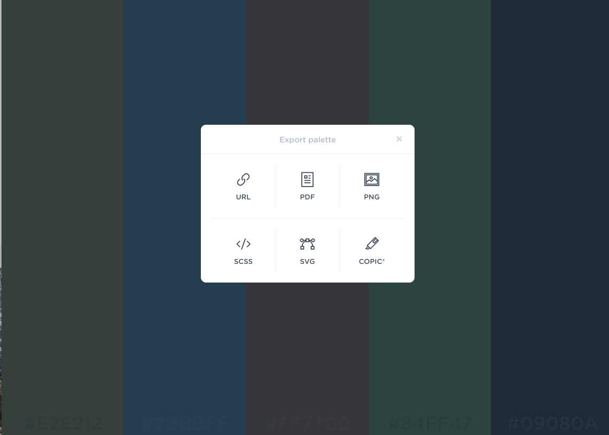

WEB Fundamentals
WDD 130
Creating a Site Plan
Activity Instructions
Estimated Time: 60 minutes
What is a Site Plan?
Overview
- Task: Create a site plan to lay the groundwork for the site development
- Purpose: Prepare your website with the proper foundational information and guides.
Background
Developing a site plan is a critical step in any web design process. Site plans help establish the purpose of the site, the voice, and overall look and feel...and then they help you apply those consistently across your site.
Site plans come in many shapes and sizes, and level of detail. Here is a list of common elements in a site plan
- Statement of purpose and goals
- Definition of audience
- Personas and scenarios - Who will use the site and how will they use it?
-
A Style guide:
- Branding information - how to use the branding for the site correctly
- Typography choices and justification
- Color palette
- Specific styling of elements on the site...ie headings, lists, paragraphs, forms, links, buttons, etc
- A site map
- Wireframes showing general layout and content for major pages
We will be making a simplified site plan for our web site. Ours will focus on the sections for Purpose, audience and a partial style guide. Since the style guide will be the largest portion lets take a look at an examples to get a better idea about how site plan might be put together.
Example
FamilySearch
FamilySearch has a nice styleguide viewable by anyone. Take a moment and think about the purpose and audience of the site. Does the site accomplish the purpose well and cater to its audience?
This site is much bigger and more complex than what we will do for our site. However even though our site will be a simple website for a White Water Rafting Company, this planning phase is still important and you are expected to produce a site plan that is complete and professional looking.
Instructions
-
Prepare a place for our site plan
As we set up GitHub Pages we created a 'wwr' repository with an index.html file. This will eventually be the home page to our rafting site. We need to place our site plan html and css files in that same repository since it goes with that project.
Open Visual Studio Code and make sure your project folder is added if it is not already there. You should see the project in the Explorer panel.
Click on the 'New File' icon

Add a new file and name the file site-plan-rafting.html

Name it site-plan-rafting.html Go to: Site Plan Template Right-click on the page and view the source code. (On Chrome it's the pop-up menu option 'View Page Source')

Open the page source Copy all the html code.(not all the code shows on the image, you will need to copy all the code). You can use Cmd+A or Ctrl+A to select it all quickly, then copy it.

Copy the page source code Paste the code into your site-plan-rafting.html page in VSCode and save the file.

Paste the code into site-plan-rafting.html [Notice]: You should see a new number on the Source Control icon (the little blue circle with a number).Git has noticed that we added a new file. We won't commit or push until we are all done with the activity.
We also need the CSS file that goes with our HTML. Let's make a styles folder to hold the CSS.
Click the 'New Folder' icon

Make a folder to hold CSS Name the folder styles

Name the new folder styles With that new styles folder selected, add a new file called site-plan-rafting.css within the styles folder.

Add a new site-plan-rafting.css file Go to: Site Plan CSS Copy all the code.

Copy all the CSS code Paste the code into the site-plan-rafting.css file in VSCode and save it.

Paste all the CSS code While we are on file management let's add an image folder to our project as well. In the site plan you may choose to use your own logo. The images folder is where you will place that logo.
Add a folder to the project called images. It won't have anything in it for now.

Add an images folder -
Make Additions/Changes to the Template
Open the site-plan-rafting.html file in your VSCode editor. In the
<header>section of the code Add your site name, your name, and section number. (Notice that anywhere there is [ ] square brackets, you will be replacing them with your information.)
Replace brackets with your information In the next few steps you will also be changing the
<p>element content Under the 'Purpose'<h3>element; where it says '[Your purpose here]'. And the Audience paragraph, where it says '[Your audience here]'. The next steps explain what to type there.
Replace brackets with your information -
Purpose Statement
From the beginning, websites have always been about displaying content. This is the underlying purpose behind every site on the internet, or at least it should be. In order to determine which content you should put on the site it is critical to determine the purpose or goals of the site. The content should support that purpose. At a high level these purposes can take many forms:
- Build Revenue Build revenues for your new/existing business or
- Share Information Share corporate or educational information or
- Share Opinions Share opinions on a subject or
- Share Personal Interests Share personal interests with family and friends
All websites should have a purpose, and that purpose should be more than 'My teacher is making me do this.' :)
We need to do this now for our website. One problem: the purpose really needs to be defined by the site owner and not the site builder. So for this step and the next, imagine that you are the owner of the business and have decided that it is time for you to have an online presence. Develop a purpose statement that clearly defines your goals for the website. Find the portion of the site-plan-rafting.html file for the purpose. It looks like this:
<h3>Purpose</h3> <p>[Your purpose here]</p> <!-- change this -->Replace [Your purpose here] with your purpose statement.
-
Audience Statement
Another important factor to keep in mind when planning a website, is the audience for the site. Remember, that websites are all about content. The purpose helps define what content you should include, and the content should target your specific audience or audiences (websites can have more than one).
Write a statement specifically identifying your target audience. Try to answer these questions:
- Who are the target customers? Describe their life (or business) situation (age, financial situation, interests, etc)
- What do they want?
- What are their needs that aren't being met?
- How will my audience usually access my site (desktop, laptop, mobile device)?
Add your Audience to your siteplan just like you did for the Purpose above.
-
Choose a logo
You can keep the logo that is already in the site plan, or you can find or create a logo of your own.
The current logo is linked directly to an image that is already on the web.

Current logo location on web If you want to replace the logo with another one, place the image file into the image folder. You can even drag it into the folder. Then change the path value of the src to reference your new logo.

Changed logo location to local images folder The path is now pointing to the images folder and then the name of the image file inside the folder. Yours might have a different name than 'dryoarlogo.png'. Use the image file name you have in the images folder. The .png file type is usually best for logos.
-
Color Palette
Color plays an essential role in any website and so the colors you use should be chosen deliberately. The follow video is on color theory and can help with these choices.
Below is a video with some tips on how to create your color palette. It covers steps 7-9.
-
Using Coolors.co
Visit coolers.co and keeping your site purpose and audience in mind build a color scheme using it. Start by thinking of a color you like or think will work well for your site.
Explore the color palettes. You will see 5 color stripes. Each color has 4 items on that show when you hover over them: Alternative Shades, drag, adjust, and lock. Play around with one color until you end up with something like you imagined above... then lock it. Hit the space bar on your keyboard to generate different complementary color schemes for the color you chose. Feel free to lock other colors and generate until you end up with 3-4 colors you like.
-
Record the color codes
Once you have built your palette note that at the bottom of each color column there is a 6 digit "number". This is what is known as a hexadecimal color code and is usually preceded by a "#". These codes are the most common way to represent colors on the web. Copy that code for the 3-4 colors you would like to use into the Site plan document. Place the color you want to use the most often as the primary.
After entering the codes into the HTML file switch to the site-plan.css file. Notice that there is a place to record your colors there as well. Do so, then look at the Preview. You should see your colors showing in different areas!
-
Save your color scheme
You should save your chosen palette URL from coolers.co in case you need to make any changes later. Copy the URL of your palette. (it might look something like this: https://coolors.co/b7d3f2-afafdc-8a84e2-84afe6-79beee) and paste it into your site-plan.html in two places
Palette URL: <a href="https://coolors.co/396e94-e7c24f-a43312-381d2a-aabd8c" target="_blank">https://coolors.co/396e94-e7c24f-a43312-381d2a-aabd8c</a>Notice that when working with links in HTML the destination of the link goes in the src attribute. Then the part you click on goes inside of the
<a>element. Often those will be different...but in this case we are going to make them both the URL to your color scheme. -
About Fonts
Along with the colors you choose, fonts have the next largest (or maybe even larger in some cases) impact on the look and feel of your site. To help you think about this watch the following video.
The next video gives some tips on adding the fonts to your site plan. It covers steps 11 and 12.
-
Choose your fonts
Choose one or two fonts to use for the site and record them in the Site Plan. Then we need to enter your fonts into the CSS file as well so we can really see what they will look like.
If your fonts are from Google then look at @import in site-plan-rafting.css. This line lets our page know where to find the fonts we need. Change the example font names there to your fonts. Notice that if your font name has any spaces in it you should replace them with '+'. Look at my example:
I want to use the following two fonts from Google: IM Fell French Canon SC and Lato
@import url('https://fonts.googleapis.com/css?family=IM+Fell+French+Canon+SC|Lato');Notice in the
@importmy first font got changed to: IM+Fell+French+Canon+SC (spaces replaced with +). My second font was a simple one word font to it was added just as it was with a | (shift + \) separating my fonts. -
Color your fonts
Often you want your text to appear on a colored background. Let's pick some colors from your palette that will work well together.
See if there are two colors in your scheme that can be used as text color/background color where the text remains readable (you need a high contrast between the colors). Black and White are always fair game even if they aren't in your color scheme :) You can always visit contrast-ratio.com to make sure your text and the background of the text have a passing ratio.
Switch to the site-plan-rafting.css file find the lines that look like this:
--headline-color-on-white: black; /* headlines on a white background */ --headline-color-on-color: #FFFFFF; /* headlines on a colored background */ --paragraph-color-on-white: black; /* paragraph text on a white background */ --paragraph-color-on-color: #FFFFFF; /* paragraph text on a colored background */ --paragraph-background-color: #000000;Change the
--paragraph-background-colorand then--headline-color-on-colorand--paragraph-color-on-colorvalues. If done correctly you should see an example of your colors together in the Preview of your page on Live Server. If any of the text is hard to read then try different colors. -
Style your navigation
Finally from your color palette choose the colors you would like to use for your navigational links (normal, hover, and backgrounds) and enter those colors in the site-plan-rafting.css file. Hover over the menu option to make sure the hover colors look good too.
Under the Navigation section under Site Map you'll notice that there is a page called [Page2] this will eventually be replaced with a more meaningful page name. Since we haven't decided on this page yet, you can leave that as it is for now. But later we will be adding a child page to our rafting site and we can come back and change it then.
The last section has a wireframe. The wireframe shows what the home page will look like, how it will be laid out. We will not be changing anything in this area, just review it. In the following weeks you will use the wireframe provided to help you to create the home page for the site. Later in the semester you will create a wireframe for the child page.
-
Submit to Ilearn
Check your site-plan-rafting.html in VSCode using Live View to make sure it looks good.

Check your site plan using Live Server All the colors should be from your color palette and the fonts you chose should be showing. Also make sure all the [ ] square brackets have been replaced with new content.
Let's review how to commit and push your files to GitHub so they can be viewed live on the Internet. Click the Source Control icon and you should see 2 or 3 files that have changed. Type in a message like I have here 'site plan added' and click the check mark to commit your new files.

Type the commit message and commit Then click the ... three dots to bring up the menu and choose 'Push' to send your changes to GitHub

Push the changes to GitHub Check that the files made it to GitHub by opening your GitHub account and repository and seeing that the files made it there.

Check that the files made it to GitHub Now if you had GitHub Pages all set up, in a few minutes you should see your site plan at https://yourgithubaccount.github.io/wwr/site-plan-rafting.html
You will submit this URL or web address of your site-plan-rafting.html